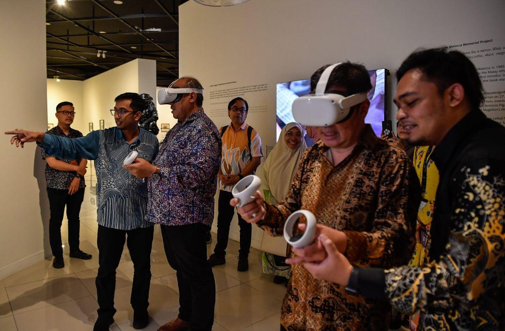
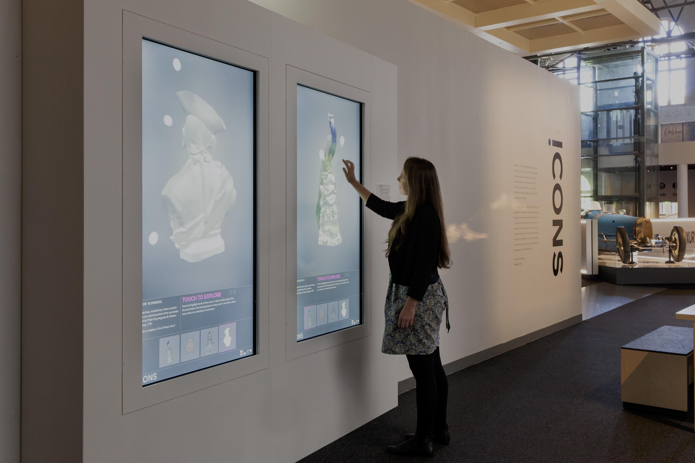
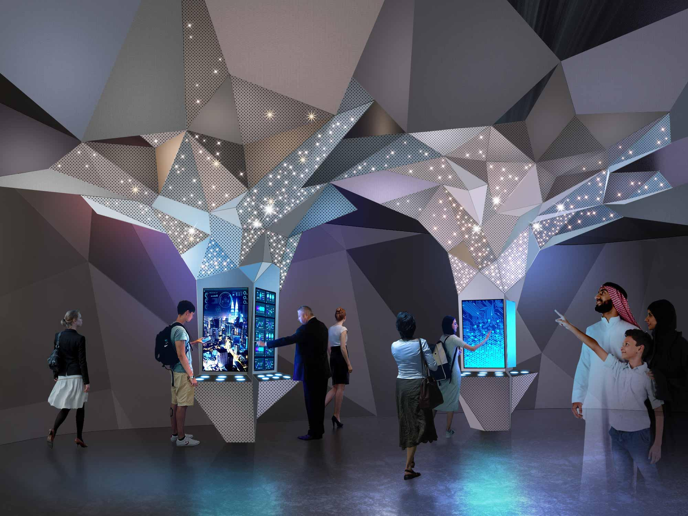
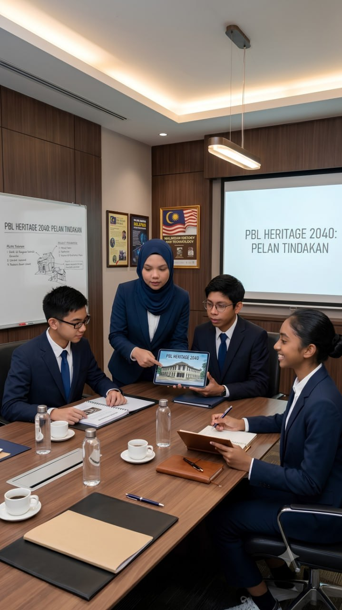
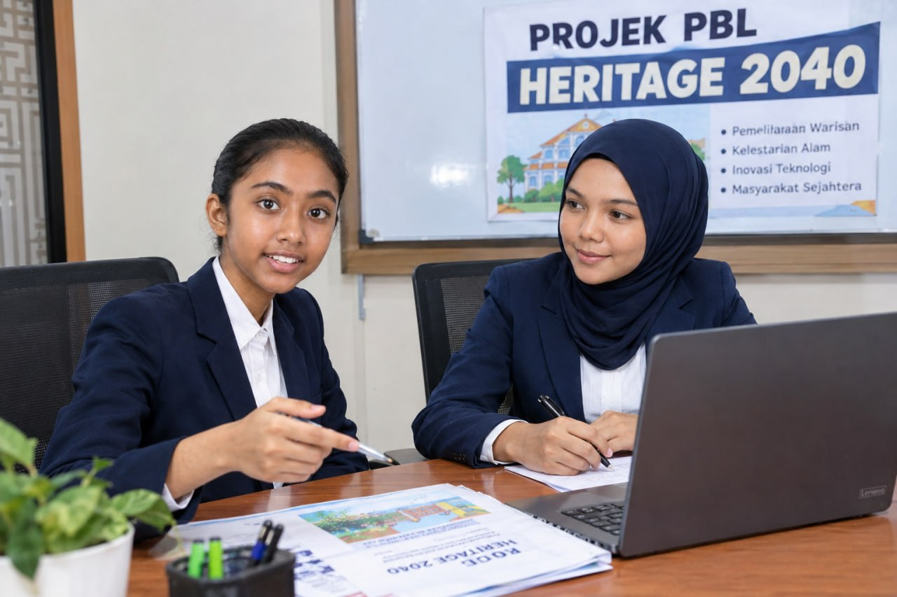
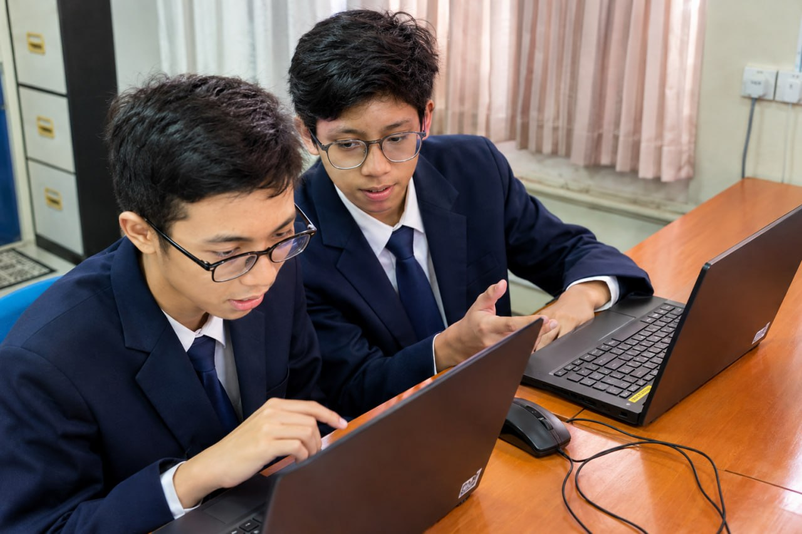
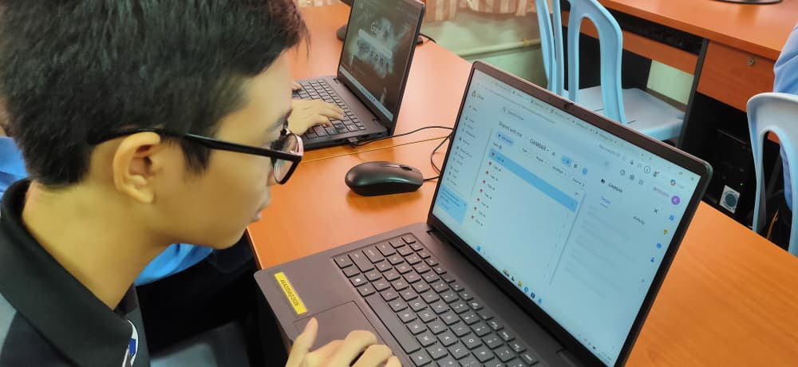
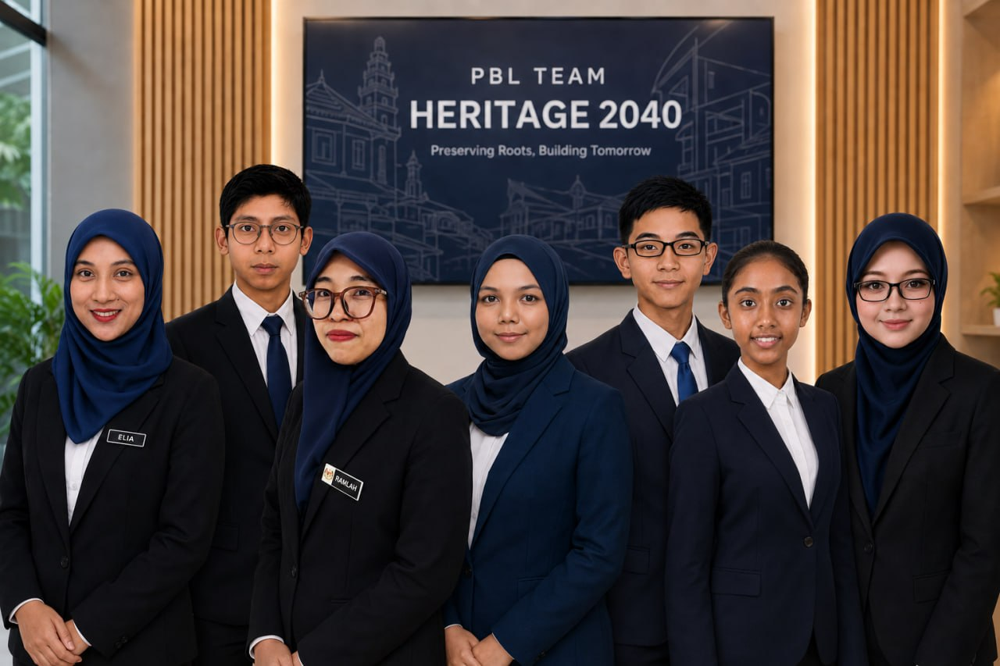

Merging Perak's historical identity with digital technology, interactive heritage mapping, artificial intelligence, sustainable preservation, and youth innovation.
2040 Museum Vision & Concepts

01 // Immersive VR & Spatial Computing
Next-generation spatial environments allowing visitors to physically navigate and interact with historical site recreations using XR headsets.

02 // Interactive 3D Digital Displays
Touch-enabled, ultra-high-definition interactive walls offering full 360-degree rotation and micro-detail exploration of rare artifacts.

03 // Smart Canopy & Dynamic Data Hubs
Architecturally integrated data structures combining geometric aesthetic canopies with multi-user interactive information kiosks.
Strategic Pillars
01 // Digital Heritage Archive
A long-term digital archive preserving photographs, historical documents, oral histories, research records, and verified information about Perak's heritage.
02 // AI Heritage Guide
An AI-powered educational assistant that helps visitors learn about Perak's heritage and directs them to reliable historical sources.
Royal landmark in Kuala Kangsar featuring magnificent golden domes, archived in dynamic lighting grids.
05 // Istana Kenangan
Royal wooden palace constructed without nails, preserved via automated timber micro-climate protection controls.
Natural & Environmental Heritage
06 // Taiping Lake Gardens
Malaysia's oldest public park, featuring iconic century-old Rain Trees monitored via botanical sensory telemetry[cite: 10].
07 // Perak River Basin
Historical 400 km river cradle of royal dynasties and rich biodiversity, mapped with 3D hydro-surface telemetry[cite: 10].
Interactive Spatial Telemetry Map
Select any map marker or node button below to trigger telemetry audio and inspect site analytics on the HUD panel.
📡
TELEMETRY STANDBY
Select a heritage marker on the map to stream historical archives and structural analysis.
// ENGLISH HERITAGE STORY //\
Mystery of Perak Man
Explore the story of Perak Man, one of the most significant prehistoric discoveries associated with the Lenggong Valley. This English-language story uses video to bring Perak's archaeological heritage to life.
STORY 01 // ENGLISH
The Mystery of Perak Man
ARCHAEOLOGICAL HERITAGE
Focus
Perak Man and the prehistoric heritage of Lenggong Valley.
Language
English Heritage Story for international and English-speaking visitors.
Reference
See the Trusted Sources section for official heritage references.
3D AR Interactive Artifact Studio
Click any button below to render dynamic 3D WebGL models or explore high-fidelity digital twin Sketchfab embeds. Drag to rotate 360°, scroll to zoom, or click directly on the 3D model to inspect!
3D RENDERER: ONLINE
ROTATION: X: 0° | Y: 0°
LABU SAYONG 3D POTTERY
TRADITIONAL CRAFT & HERITAGE
LABU SAYONG 3D POTTERY
Iconic gourd-shaped clay jar from Sayong, Perak. Fired and finished with paddy husks to produce its signature charcoal sheen and natural cooling properties.
AGE: CENTURIES OLD
MATERIAL: EARTHENWARE CLAY
ORIGIN: SAYONG, KUALA KANGSAR
MESH: 3D DIGITAL TWIN
3D Volumetric Mesh Inspection
Real-time procedural WebGL geometry generation and high-resolution spatial scanning allowing visitors to zoom, orbit, and analyze structural artifacts.
Raycasting Interaction
Clicking directly on 3D meshes triggers dynamic spatial lighting pulses and real-time structural analysis.
Spatial AR Projection
Inspect glowing volumetric hologram frames and procedural digital twin representations in full 3D viewport space.
STEM PIPELINE // ONLINE
PROTOCOL: KMR-PBL v2040
// SYSTEM_PROCESS: RESEARCH_TO_DEPLOYMENT
🔬 PBL-KMR STEM JOURNEY
From Heritage Problem to Future Solution
01
🔎
DISCOVER
Explore Perak's heritage
[ EXPAND ]
OBJECTIVE: We explore Perak's historical sites, artefacts, traditions, buildings, and natural heritage to establish cultural context and deep historical appreciation.
02
❓
IDENTIFY
Find a heritage problem
[ EXPAND ]
OBJECTIVE: We isolate critical real-world challenges affecting heritage preservation, such as declining engagement, physical decay, or limited spatial accessibility.
03
📚
RESEARCH
Collect reliable information
[ EXPAND ]
OBJECTIVE: We cross-reference primary historical sources, execute site scans, study photographs, conduct oral history interviews, and verify data from trusted archives.
04
🧠
ANALYSE
Understand the problem
[ EXPAND ]
OBJECTIVE: We evaluate target findings, correlate metrics, and map out core root causes, structural vulnerabilities, and community needs.
05
💡
IDEA
Generate possible solutions
[ EXPAND ]
OBJECTIVE: We brainstorm solutions applying Science, Technology, Engineering, and Mathematics (STEM) frameworks to directly resolve our identified challenge.
06
🎨
DESIGN
Plan our solution
[ EXPAND ]
OBJECTIVE: We blueprint technical systems, user interfaces, database structures, and spatial viewports for our interactive website, GIS map, and 3D digital archives.
07
🛠️
CREATE
Build the prototype
[ EXPAND ]
OBJECTIVE: We code and build functional software engines using HTML5, WebGL 3D rendering, Leaflet mapping APIs, and interactive Web Audio synthesizers.
08
🧪
TEST
Evaluate and improve
[ EXPAND ]
OBJECTIVE: We deploy user testing loops, collect metrics, diagnose usability bottlenecks, and execute iterative code optimizations.
09
🎤
PRESENT
Share our solution
[ EXPAND ]
OBJECTIVE: We present our research, functional software prototypes, and community impact to educators, peers, and heritage advocates.
10
🚀
HERITAGE 2040
Imagine the future
[ EXPAND ]
OBJECTIVE: We project forward into 2040—scaling decentralized digital twins, AI holograms, and spatial mapping to preserve Perak's legacy indefinitely.
Synthesizing STEM, humanities, and digital literacy under KPM frameworks
💡KPM STEM INTEGRATION FRAMEWORK
In accordance with Ministry of Education Malaysia (KPM) guidelines, our STEM approach unifies STEM and non-STEM disciplines alongside digital, data, and technology literacy to build holistic solutions for heritage preservation.
SUBJECT
CORE DISCIPLINE
SYSTEM CONTRIBUTION & DELIVERABLES
📜 Sejarah
Humanities
Heritage research, primary historical evidence validation, and cultural context mapping for Perak archives.
💻 ASK
Computer Science
Website architecture, digital technology integration, database structures, and dynamic interactivity.
🇬🇧 English
Languages
Narrative storytelling, global communication, technical documentation, and presentation scripts.
🔬 STEM
Sci / Tech / Eng / Math
Scientific investigation, engineering design loops, data analytics, and functional testing.
🎨 Design
Arts & Design
UI/UX experience planning, visual communication, 3D assets, and spatial aesthetic layouts.
Tangible proof of our research, iteration, and engineering lifecycle
PBL Evidence

Phase 1: Initial brainstorming and assigning group roles.

Phase 2: Active investigation and building our initial prototype.

Phase 3: Testing hypotheses and applying feedback to refine the solution.

Final Deliverable: The completed project model ready for presentation.
Presentation Highlights: Presenting our final solution and team reflection.
// FUTURE VISION // 2040
Future Ideas
Imagine how digital technology, sustainability, education and young people could help protect Perak's heritage for future generations.
01
🌐
Smart Heritage Mapping
Connect Perak's heritage sites, locations, historical information and preservation records in one interactive digital map.
A future map could help visitors discover heritage trails while helping students and organisations organise verified heritage information by location.
02
🤖
AI Heritage Guide
An educational AI assistant that helps users learn about Perak's heritage and directs them to reliable historical sources.
The concept can answer questions, explain historical terms and recommend verified sources. AI-generated information should always be checked against trusted references.
03
🌱
Eco-Smart Preservation
Combine heritage conservation with sustainable practices and environmental monitoring.
Possible future solutions include energy-efficient systems, responsible visitor management and environmental monitoring around heritage sites.
04
☁️
Heritage Cloud Archive
Preserve photographs, documents, oral histories, research and verified heritage information digitally.
Each heritage record could include its name, location, historical significance, photographs, references and preservation information.
05
👩🎓
Youth Heritage Network
Encourage students and young people to research, document and promote local heritage.
Students could conduct local research, record oral histories, create digital stories and contribute verified educational material to the heritage community.
06
🏛️
Smart Heritage Management
Use connected information systems to support visitor management, heritage records and conservation planning.
A future management system could bring together site information, visitor data and conservation records to support better planning and decision-making.
HERITAGE 2040 // THE BIG QUESTION
How can we protect the past while preparing for the future?
Choose a heritage area, a goal and a practical solution below to create your own Heritage 2040 concept.
// DESIGN LAB
DESIGN PERAK 2040
YOUR HERITAGE 2040 CONCEPT
Interactive Heritage Quiz
10 history questions based on the Heritage Gallery and Interactive Map.
QUESTION 1 / 10
Question Loading...
QUIZ COMPLETED
MEET THE HERITAGE 2040 TEAM
4 STUDENTS •
3 TEACHERS •
1 SHARED MISSION
Ideas by students. Heritage for the future.
Student Researchers
01 // Heritage Researcher
Student: CHE AHMAD IMAD ULHAQ BIN MUHAMAD TAJUDIN
Researches Perak's history and checks historical facts using reliable sources.
02 // Digital Developer
Student: KHAIRUL IKHWAN SYAHMI BIN HAKIMI
Works on HTML, website design, interactive features and digital presentation.
03 // Heritage Mapper
Student: FARAH JABEEN BINTI HAIDER ALI RAZA
Organises heritage locations, map information and connections between sites.
04 // Creative Storyteller
Student: YAASVINI A/P BANDIRWO
Develops English Heritage Stories, visuals, presentations and digital storytelling.
Teacher Team
TEACHER 01 // ASK TEACHER
Name: LILY IZWANA BINTI MOHD MUSTAZA
Guides students in computer science and digital technology, including HTML, programming, computational thinking and the development of the HERITAGE 2040 website.
TEACHER 02 // HISTORY TEACHER
Name: RAMLAH BINTI AHMAD
Guides historical research, checks the accuracy of historical facts, and helps students use reliable sources to understand Perak's heritage.
TEACHER 03 // ENGLISH TEACHER
Name: ELIA EDILIYA BINTI MOHD MAGELAN
Guides students in English communication, writing, presentation and storytelling for the English Heritage Stories section.

OUR MISSION
To explore, document and promote Perak's heritage while using digital technology
and STEM-based problem solving to imagine how it can be protected for future generations.
What We Created
🔎 Research
Historical research, source checking and heritage documentation.
🗺️ Interactive Map
A digital way to explore important heritage locations across Perak.
💻 Digital Website
A digital heritage experience combining history, technology and education.
🚀 Future Ideas
Student proposals for protecting Perak's heritage towards 2040.
OUR CONTRIBUTION
Four students. Three teachers. One heritage mission.
“Protect the past. Design the future.”
Trusted Sources & References
A dedicated evidence layer for the Heritage 2040 project. Sources are grouped by purpose so visitors can see where historical facts, heritage information, location data, and future-planning context come from.
OFFICIAL KPM TEXTBOOKBuku Teks Sejarah Tingkatan 2 KSSM
Official Ministry of Education (KPM) reference for the historical context of the Kesultanan Melayu Melaka, Kesultanan Perak, and related heritage topics covered in the project.
Official state-level reference for Perak government information, development context, and public-sector planning.
RESEARCH METHODProject Evidence & Verification
Project claims should be cross-checked against primary historical records, official heritage archives, site documentation, photographs, oral-history interviews, and verified datasets before being presented as established facts.
FUTURE / PROPOSALFuture Ideas Evidence Layer
Future-facing concepts are labelled as proposals rather than historical facts. Their feasibility, technology claims, and planning assumptions should be supported by appropriate official or academic evidence.
No matching resources found.
SOURCE POLICY: Official government and heritage authorities are prioritised for factual claims. UNESCO and established academic sources provide independent supporting evidence. AI-generated explanations and future concepts are not treated as primary evidence and should be checked against trusted references.